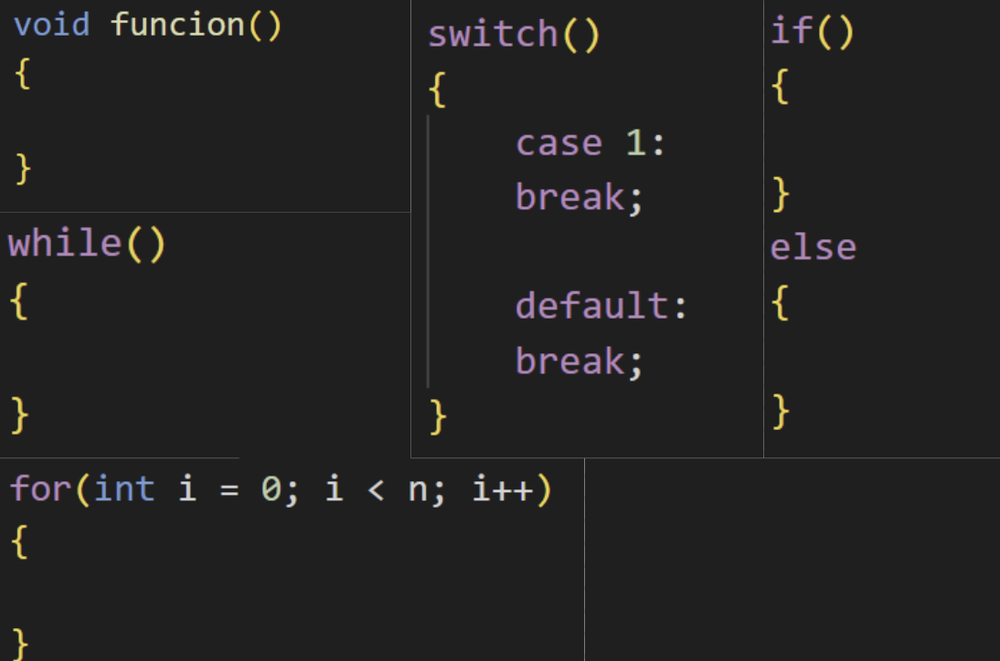
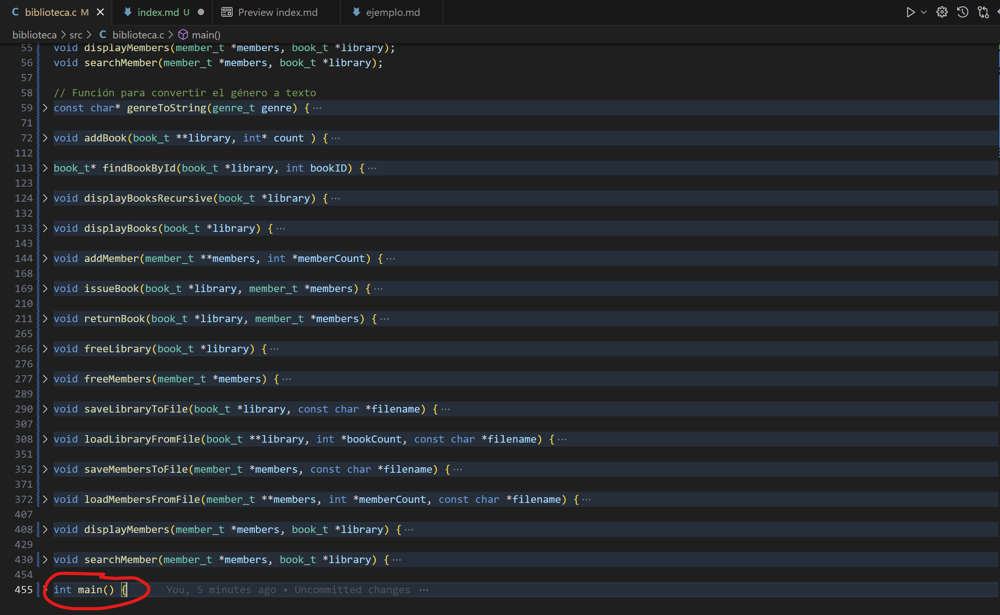

Rodrigo López Rojas
Practica 1: Elementos básicos de los lenguajes de programación
Introducción
Para esta practica el profesor proporciono un codigo en C para gestionar una blibloteca, con el objetivo de identificar los elementos fundamentales de los lenguajes de programación que son: nombres, objetos, entornos, bloques, alcance, administración de memoria, expresiones, comandos, secuencia, selección, iteración, recursión, subprogramas, y tipos de datos.
Nombres y Objetos
- bibliteca.c
Variables globales
En el codigo se puede encontrar dos variables globales de tipo entero
int static_var = 0 //Variable estatica
int bss_var //Variable no estatica
Apuntadores
Dos apuntadores, uno llamado library con un tipo de dato book_t, y otro llamado members tipo member_t
//Ambos apuntadores se inicializan apuntando a NULL
book_t *library = NULL;
member_t *members = NULL;
Estructuras
Estructuras con uso del typedef para los libros, miembros y generos de libros. Cada estructura con sus propios nombres y variables dentro.
typedef enum {
FICTION,
NON_FICTION,
SCIENCE,
HISTORY,
FANTASY,
BIOGRAPHY,
OTHER
} genre_t;
typedef struct _book {
int id;
char title[100];
char author[100];
int publication_year;
genre_t genre;
int quantity;
struct _book *next;
} book_t;
typedef struct _member {
int id;
char name[100];
int issued_count;
int *issued_books;
struct _member *next;
} member_t;
Funciones
Funciones, donde cada funcion tiene su propio tipo de dato y parametros
const char* genreToString(genre_t genre);
void addBook(book_t **library, int* count);
book_t* findBookById(book_t *library, int bookID);
void displayBooksRecursive(book_t *library);
void displayBooks(book_t *library);
void addMember(member_t **members, int *memberCount);
void issueBook(book_t *library, member_t *members);
void returnBook(book_t *library, member_t *members);
void freeLibrary(book_t *library);
void freeMembers(member_t *members);
void saveLibraryToFile(book_t *library, const char *filename);
void loadLibraryFromFile(book_t **library, int *bookCount, const char *filename);
void saveMembersToFile(member_t *members, const char *filename);
void loadMembersFromFile(member_t **members, int *memberCount, const char *filename);
void displayMembers(member_t *members, book_t *library);
void searchMember(member_t *members, book_t *library);
- Libreria memory_management.h
Macros
Esta libreria cuanta con macros, cada uno con su respectivo nombre
#ifndef MEMORY_MANAGEMENT_H
#define MEMORY_MANAGEMENT_H
Variables tipo entero
Cuenta con variables extern int para contar el uso de memoria
extern int heap_allocations;
extern int heap_deallocations;
extern int stack_allocations;
extern int stack_deallocations;
- memory_management.c
De igual forma se cuenta con variables globales
Variables tipo entero
int heap_allocations = 0;
int heap_deallocations = 0;
int stack_allocations = 0;
int stack_deallocations = 0;
Apuntador
MemoryRecord *heap_memory_records = NULL;
Estructura
typedef struct MemoryRecord {
void *pointer;
size_t size;
struct MemoryRecord *next;
} MemoryRecord;
Funciones tipo void
void addMemoryRecord(void *pointer, size_t size);
void removeMemoryRecord(void *pointer);
void displayMemoryUsage();
void incrementHeapAllocations(void *pointer, size_t size);
void incrementHeapDeallocations(void *pointer);
void incrementStackAllocations();
void incrementStackDeallocations();
Un apuntador tipo MemoryRecord
MemoryRecord *heap_memory_records = NULL;
Entornos
- biblioteca.c
En este codigo tenemos tres diferentes entornos
- Global En este entorno contamos con variables donde cualquier parte del codigo puede tener acceso a ellas
int bss_var;
- Estatica Estas variables tiene la cualidad de que sin importar en que parte del codigo se encuentre, su valor no se perdera, al contrario de las variables locales
static int static_var = 0;
- Local Estas suelen ser variables que se definen dentro de funciones, por lo que una vez se salga de la funcion, la variable perdera su valor, aunque se vuelva a llamar la funcion la variable se inicializara de nuevo
void issueBook(book_t *library, member_t *members)
{
int bookID, memberID;
printf("\nIngresa el ID del miembro: ");
scanf("%d", &memberID);
printf("Ingresa el ID del libro: ");
scanf("%d", &bookID);
}
- memoy_management.h
Al ser una libreria solo cuenta con los prototipos de las funciones
- memory_management.c
Este utiliza los protitpos de la liberia memory_management.h, por lo que no importa en que orden se escriban o se usen las funciones, estas seran accesibles desde cualquier parte del codigo
Bloques
Los bloques en este lenguaje se delimintan con llaves, esto aplica para lass funciones, estructuras de control y de flujo

Alcance
- biblioteca.c
En cuanto alcance nos limitamos a dos, el global y el local:
- Una variable global puede ser usada en cualquier parte el codigo Por ejemeplo:
int bss_var;
- Una variable local solo son accesibles dentro de su respectivo bloque Por ejemplo:
void searchMember(member_t *members, book_t *library) {
int memberID;
}
Mientras que las funciones al tener sus prototipos estas pueden ser llamadas desde cualquier parte del codigo sin importar el orden en que se ejecute el codigo
- memory_management.h
Tanto las variables enteras, como las funciones, son accesibles desde cualquier parte del codigo
extern int heap_allocations;
extern int heap_deallocations;
extern int stack_allocations;
extern int stack_deallocations;
Mientras que apesar de que las funciones tambien deberia ser accesibles desde cualquier parte del codigo, solo podran accederse si se cumple la condicion
#if MEMORY_MANAGEMENT_DISPLAY
void displayMemoryUsage();
void incrementHeapAllocations(void *pointer, size_t size);
void incrementHeapDeallocations(void *pointer);
void incrementStackAllocations();
void incrementStackDeallocations();
- memory_management.c
Este codigo solamente desarrolla el procedimiento que haran las funciones de la libreria memoery_management.h, y al no contar con una funcion main, no se ejecutara ninguna de las funciones por si sola
Administración de memoria
Para reservar la memoria en el heap se utiliza malloc y realloc
//malloc
book_t *new_book = (book_t *)malloc(sizeof(book_t));
//realloc
memberFound->issued_books = realloc(memberFound->issued_books, memberFound->issued_count * sizeof(int));
Al terminar el programa se utiliza free para liberar la memoria
freeLibrary(library);
freeMembers(members);
Se registran asignaciones y liberaciones de memoria
incrementHeapAllocations(new_member, sizeof(member_t));
incrementHeapAllocations(new_member->issued_books, new_member->issued_count * sizeof(int));
Expresiones
- biblioteca.c
En cuenta a expresiones tenemos la condicion if, si la condicion se cumple se ejecutara lo que este dentro del bloque, si no, omitira el bloque y seguira con el resto del codigo
if (current->id == memberID) {
}
- memory_management.h
En cuanto a la libreria
Comandos
displayMemoryUsage() ((void)0)
incrementHeapAllocations(pointer, size) ((void)0)
incrementHeapDeallocations(pointer) ((void)0)
incrementStackAllocations() ((void)0)
incrementStackDeallocations() ((void)0)
Secuencias
La secuencia del codigo inicia desde la funcion main, sin importar que este al inicio o al final del codigo. Despues seguira la secuencia de instrucciones que haya dentro de main, ya sea realizar calculos, comparaciones o llamar a funciones como suele ser el caso.
De igual forma cabe aclarar que es recomendable poner los protitipos de las funciones, ya que puede haber errores al intentar llamarlas en algunas partes del codigo

Selección
- biblioteca.c
El codigo contiene condiciones if-else, en este paso para verificar si un libro existe o no
if (bookFound && memberFound) {
}
else {
}
En la funcion main se tiene un menu utilizando un switch, y dependiendo del valor entero que se ingrese, dependera la fucnion que se va a llamar, o si se sale del ciclo que mantiene a este menu
switch(op) {
case 1:
break;
}
memory_management.h y memory_management.c
Ambos codigos cuentan con una condicion #if, #else y endif
#if MEMORY_MANAGEMENT_DISPLAY
void displayMemoryUsage();
void incrementHeapAllocations(void *pointer, size_t size);
void incrementHeapDeallocations(void *pointer);
void incrementStackAllocations();
void incrementStackDeallocations();
#else
#define displayMemoryUsage() ((void)0)
#define incrementHeapAllocations(pointer, size) ((void)0)
#define incrementHeapDeallocations(pointer) ((void)0)
#define incrementStackAllocations() ((void)0)
#define incrementStackDeallocations() ((void)0)
#endif
Iteración
Se cuentan con tres tipos de ciclos, cada uno de estos ciclos se repetira una cantidad n de veces mientras la expresion del ciclo se cumpla
while (current) {
}
for (int i = 0; i < current->issued_count; i++) {
}
do {
} while(choice != 8);
Recursión
En el codigo la funcion displayBooksRecursive(), la cual muestra los libros de forma recursiva
void displayBooksRecursive(book_t *library) {
if (!library) {
return;
}
printf("\nID libro: %d\nTitulo: %s\nAutor: %s\nAno de publicacion: %d\nGenero: %s\nCantidad: %d\n",
library->id, library->title, library->author, library->publication_year, genreToString(library->genre), library->quantity);
displayBooksRecursive(library->next);
}
Subprogramas
- biblioteca.c
En cuanto a los subprogramas tenemos a las siguientes funciones
const char* genreToString(genre_t genre); //Converte las variables de enumeracion a una cadena
void addBook(book_t **library, int* count); //Añade un libro
book_t* findBookById(book_t *library, int bookID); //Busca un libro por id
void displayBooksRecursive(book_t *library); //Mostrar libros de forma recursiva
void displayBooks(book_t *library); //Mostrar libros
void addMember(member_t **members, int *memberCount); //Añadir miembro
void issueBook(book_t *library, member_t *members); //Prestar libro
void returnBook(book_t *library, member_t *members); //Regresar libro
void freeLibrary(book_t *library); //Librerar memoria de libros
void freeMembers(member_t *members); //Liberar memoria de miembros
void saveLibraryToFile(book_t *library, const char *filename); //Guardar biblioteca en un archivo
void loadLibraryFromFile(book_t **library, int *bookCount, const char *filename); //Cargar la bibliteca desde un archivo
void saveMembersToFile(member_t *members, const char *filename); //Guardar miembros en un archivo
void loadMembersFromFile(member_t **members, int *memberCount, const char *filename); //Cargar miembros de un archivo
void displayMembers(member_t *members, book_t *library); //Mostrar miembros
void searchMember(member_t *members, book_t *library); //Buscar miembro
Cada una de estas funciones tiene su propia funcion, y estas funciones con llamadas desde el menu que esta en una funcion main
El tener estas funciones hace que el codigo pueda ser reutilizable en algun otro proyecto
- memory_management.c
Este cuenta con dos funciones que definen en el codigo, adicionalmente cuenta con el desarrollo de las funciones que vienen en la libreria “memory_management.h”
//Funciones del codigo .c
void addMemoryRecord(void *pointer, size_t size);
void removeMemoryRecord(void *pointer);
//Funciones de la libreria .h
void displayMemoryUsage();
void incrementHeapAllocations(void *pointer, size_t size);
void incrementHeapDeallocations(void *pointer);
void incrementStackAllocations();
void incrementStackDeallocations();
Tipos de datos
En este codigo se utilizan varios tipos de datos
int //dato tipo entero
char[] //dato tipo caracter, sin embargo, se utiliza un arreglo para tener una cadena de caracteres
struct //una estructura con la cual se crean diferentes tipos de datos
Como se vio anteriormente se utiliza el struct junto con el typedef para crear un tipo de dato, como en este caso son los libros, miembros y generos. Las cuales agrupan otros tipos de datos
typedef struct enum {
} genre_t;
typedef struct _book{
} book_t;
typedef struct _member{
} member_t;
Adicionalmente se cuenta con punteros, cada puntero tiene su respectivo tipo de dato al cual puede apuntar
book_t *library = NULL;
member_t *members = NULL;
MemoryRecord *heap_memory_records = NULL;
FILE *file = fopen(filename, "w");
En la estructura genre_t contamos con variables de enumaracion, donde cada una de ellas representa un genero de libro
typedef enum {
FICTION,
NON_FICTION,
SCIENCE,
HISTORY,
FANTASY,
BIOGRAPHY,
OTHER
} genre_t;